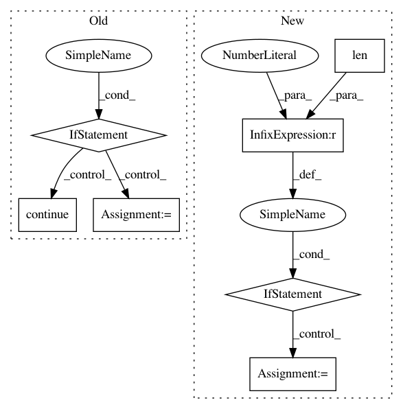

2571186c26968de784585bdabf0c0979e9608a85,src/graph_builder/optimizer/util.py,,listup_operator_in_order,#Any#,48
Before Change
while len(op_queue) > 0:
op = op_queue.pop(0)
if op in op_checked:
op_list.remove(op)
op_list.append(op)
continue
op_checked.add(op)
if isinstance(op, Compose):
op = op // type: Compose // FIXME: この書き方、もう少しどうにかならないか
op_queue.extend([var.output_from for var in op.outputs_alias])
else:
After Change
if v.output_from is not None and v.output_from not in resolved:
dependents.append(v.output_from)
if len(dependents) > 0:
stack.insert(0, op)
for dependent in dependents:
stack.insert(0, dependent)
else:
result.append(op)
resolved.add(op)
return result
def listup_variables(op: Operator, remove_alias: True) -> Set[Variable]:
In pattern: SUPERPATTERN
Frequency: 4
Non-data size: 7
Instances
Project Name: mil-tokyo/webdnn
Commit Name: 2571186c26968de784585bdabf0c0979e9608a85
Time: 2017-04-20
Author: y.kikura@gmail.com
File Name: src/graph_builder/optimizer/util.py
Class Name:
Method Name: listup_operator_in_order
Project Name: jaakkopasanen/AutoEq
Commit Name: e6f1028be471f2ba7fdf877abf7f8f9d05b8c4ce
Time: 2018-08-06
Author: jaakko.o.pasanen@gmail.com
File Name: results/recommendations.py
Class Name:
Method Name: get_urls
Project Name: chartbeat-labs/textacy
Commit Name: eaaf2bad32af4bda1a98d434530926bb6a001230
Time: 2019-08-23
Author: burtdewilde@gmail.com
File Name: textacy/augmentation/transformations.py
Class Name:
Method Name: insert_synonyms
Project Name: mil-tokyo/webdnn
Commit Name: 76e11372587646d49fc5948814d2694ba53cb476
Time: 2017-06-29
Author: y.kikura@gmail.com
File Name: src/graph_transpiler/webdnn/graph/traverse.py
Class Name:
Method Name: listup_nodes